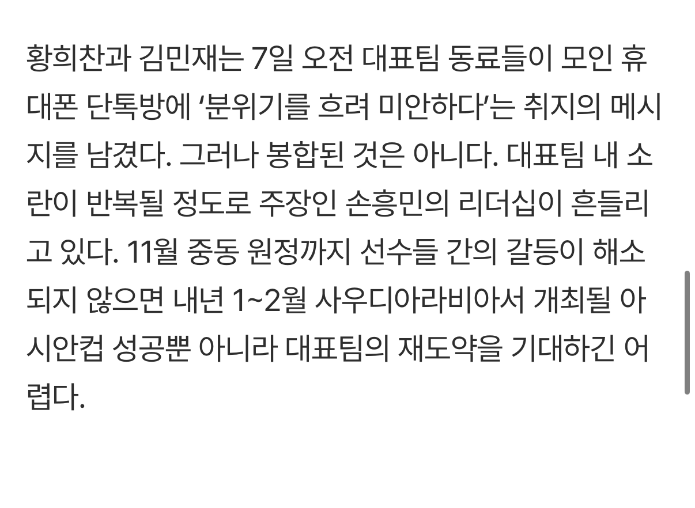

https://m.sports.naver.com/kfootball/article/382/0001297850
카톡대화를 기자한테 실시간으로 말해주는 놈 있음
이새끼가 문제 ㅋㅋ

https://m.sports.naver.com/kfootball/article/382/0001297850
카톡대화를 기자한테 실시간으로 말해주는 놈 있음
이새끼가 문제 ㅋㅋ
요며칠 기사보니까 조선, 중앙이 손흥민 엄청 돌려까고 있더라. 예전 이강인 탁구 사건까지 끌고와서 손흥민 탓인양 기사 쓰고있던데. 손흥민이 메이저 기자들한테 찍힌건지 어디서 로비를 하고있는건지. 암튼 손흥민 많이 외로워보임. 이번 월드컵 때 안우는거보고 좀 뭔가 있구나 하긴 했는데.
지금 구도가
메이저신문사, 축협, 96년 3인방 vs 손흥민, 중소언론사 이런거 같음.
스포츠조선 기사보면 의도가 너무 투명해서 재미가 있음ㅋㅋ
저번 뒷담화 사태 이후로 기레기들 작정하고 손흥민 죽이기 스텝 밟고잇음 ㅋㅋ 거기다 K축+국까들까지 합세함
뒷담화 사태 이후에 인터뷰 보이콧 할 때, 내부에서 96년3인방이 반대했다며. 이게 이렇게까지 이어지네. 황인범인가 최근 인터뷰에 주장 안바뀐다고 징징거리는거도 있고. 3인방은 국대 은퇴하는게 맞다고 봄. 지들이 그거 가지고 협박할게 아니지ㅋ
손흥민 리더쉽 운운하는 새끼들은 잡음없이 말 안듣는 히샬리송 로메로 데리고 토트넘 유로피언컵을 우승시키는걸 안 봤나?
ㄹㅇㅋㅋ 골든슈즈때 노리치 시티전에서 쿨루셉이 손흥민 패스주려다가 골문 앞에서 고장나고 모우라가 손흥민 인생 패스 준거 생각하면 리더쉽 운운 할수가 없음
저번에 소대장구보 사건도 그렇고 손흥민 기자들한테 뭐 찍혔나보네
존나 쳐먹었나보지ㅋㅋ
왜냐면 손흥민이 기존의 축협라인이 아니라서 그럼. 차범근 마냥 갑자기 천재가 튀어나와서 유럽에서 큰 아웃라이어잖아. 이런 선수는 예전부터 꾸준히 이지랄로 처냈었음.
지금 홍도 나가리 되고 욕을 병역때메 처먹고 있으니 관심을 돌리려고 그러는거
조중동은 그냥 존나 큰 일베임
어우 씨발 구역질난다
여기가 좆사국 좆커라인 정모장소인가
너냐 ? 하아...누구지
모레노가 그냥 줄빠따 개 패고 안맞겠다고 뻐팅기는 새끼는 국대소집에서 빼도 될듯
자꾸 손흥민 흔들기 하네 ㅋㅋㅋㅋ 집요하다
홍명보 쁘락찌인가? ㅋㅋㅋ
토트넘에서 주장직 하는거보면 손흥민 문제는 아닌거같은데 손흥민 문제였으면 그 자존심 넘치는 epl 선수들이 가만히 안있었지
월드컵때 인터뷰 보이콧하고 기자들이 엄청 공격함
내가 보기엔 선수단 내부갈등이 아니라 축협 정책에 대한 갈등같은디
기사에서 손흥민과 96년 3인방과의 갈등은 이미 공공연한 사실이라고 써재끼더라ㅋㅋ 그러면서 손흥민 돌려까고. 황인범이 자기가 대표하는 9년 동안 바뀐게 없다면서 은퇴 시사 나오고 염병 떨었는데 그 9년이 손흥민 주장 기간 9년과 같다고 기사에 나옴ㅋ
기레기의 기자를 곧이 곧대로 믿는 너도 참ㅋㅋㅋ
선동 당하기 쉬울듯
너는 이해를 못하는거 보니 지능이 낮은듯.
기레기 기사를 믿는 니가 더 지능 낮을듯 ㅋ
'그러면서 손흥민 돌려까고' 이거 하나만 봐도 내가 기사를 어떤 시각으로 보는지 바로 나오는데. 어휴 힘내. 지능이 낮아도 할 일이 있으니까 찾아봐.
문맥 이해도 못하고 댓글 쓰는거보니까 수준이 보인다
쁘락치새끼 돌았네 ㅋㅋㅋ
저게 주장 리더십으로 될 일이냐
빠따 허용해 주던가.
흥쌤도 2701호 사건 스리슬쩍 지나간게 있어서 ㅋㅋㅋㅋㅋㅋㅋㅋ 근데 그걸 감안해도 은퇴로 협박하는게 맞냐 병신들이
애미디졋노
손흥민이 감독이냐
당연히 주장의 리더십 중요하지
그런 기강 잡는건 코치진이지 뭘 자꾸 주장 탓으로 돌릴라 그래
내부문제를 밖으로 돌리는거부터가 문제임 안에서 해결했어야지 그걸
기자한테 그대로 일러바치는 푸씨가튼련이 있네
짜친다
인터뷰 보이콧 건 이후로 언론들이 손흥민 버릇 고쳐야겠다고 건수만 생겨라 하고 벼른다는 얘기는 들었는데...
선수단내에서 충분히 오갈 수 있는 갈등인데 외부유출되는건 좀 문제가 커보이네
손흥민하고 그 주변인들이 축협라인과 거리가 멀고, 기자들한테 기름칠도 안하자나
분위기 흐리는 3명은 지랄할꺼면 그냥 국대오지마라
팀보다 위대한 선수는 없다
저지랄할꺼면 걍 은퇴하는게 맞음 뭔 애새키도 아니고
나도 예전에 이강인하고 트러블 있을때까지만 하더라도 감히 주장한테? 이런쪽이었는데 이강인, 황인범, 황희찬, 김민재까지 대표팀내에서 목소리 좀 낼 수 있는 선수들과 죄다 트러블 있으면 손흥민한테 무슨 문제가 있는지 들여다보는게 맞다고 봄 근데 대체로 반응은 우리 쏘니 이지랄만 하고 있는데 이건 문제라고 봄 팬심을 떠나서 객관적으로 상황을 파악해야지
내가볼땐 손흥민도 문제있고 쟤들도 문제있는거같음
그리고 손빠들아
손흥민이 주장일때 자꾸 트러블생기면 리더십 얘기가 나올수밖에없다
해버지 시절엔 이런 일 없었는데
황희친부터 국대빼라
실력없는데 ㅡㅡ
다 이강인 때문임
닉값ㅋㅋㅋㅋㅋㅋㅋㅋㅋㅋㅋㅋㅋ웃었다
"이 안에 배신자가 있다. 이게 내 결론이다."
기자한테 어떤놈이 소스주는지 궁금하네
기자에게 뿌리는 저 놈을 처내야 한다
계속 문제되는거였으면 손흥민한테도 문제있는거 같기도한데
걍 해체해라
카톡대화 유출 누군지 존나 궁금함 전에도 한 번 기자한테 넘긴 걸로 아는데 신입은 아닌듯 ㅋㅋㅋㅋㅋㅋ